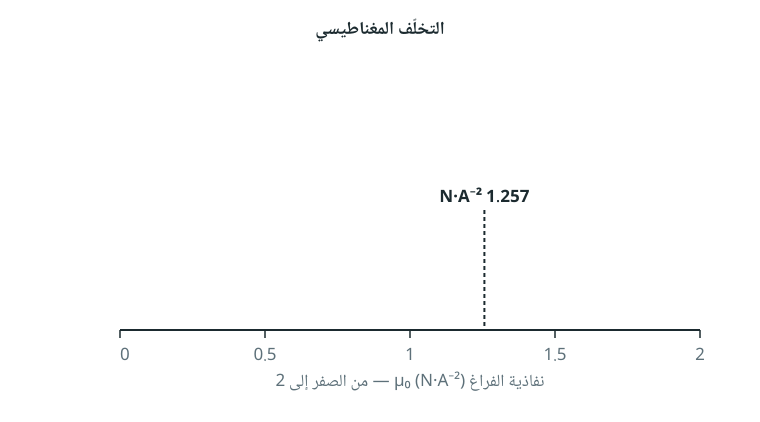

التخلّف المغناطيسي
Magnetic hysteresis
التخلّف المغناطيسي هو تأخر المغنطة عن المجال المغناطيسي المطبق، فيبقى في المادة مغنطة متبقية بعد إزالة المجال، ويُقاس بمنحنى التخلّف ومساحته تمثل الطاقة المفقودة حرارة في كل دورة.
حين يُطبَّق مجال مغناطيسي H على مادة حديدية مغناطيسية، تزداد مغنطتها B، لكن العلاقة بينهما ليست خطية ولا رجعية: B تتأخر عن H. فإذا رُفع H حتى التشبع ثم أُنزل إلى الصفر، بقي في المادة مغنطة متبقية B_r. ولإزالتها يلزم مجال عكسي يُسمى القوة القسرية H_c. والمنحنى المغلق الناتج هو حلقة التخلّف، ومساحتها تمثل الطاقة المبددة حرارة في كل دورة مغنطة. مثال: حديد مطاوع له B_r نحو 1.0 T وH_c نحو 80 A/m، بينما مغناطيس دائم من النيوديميوم له B_r نحو 1.3 T وH_c نحو 900 000 A/m.
كيف تعمل الظاهرة؟
المادة الحديدية المغناطيسية تتكون من نطاقات مغناطيسية، كل نطاق ممغنط في اتجاه ما، ومجموع مغنطتها صفر في الحالة غير الممغنطة لأن اتجاهات النطاقات موزعة عشوائياً. وعند تطبيق مجال خارجي، تنمو النطاقات الموافقة لاتجاهه على حساب المعارضة، ثم تدور اتجاهاتها. وحدود النطاقات (جدران النطاق) تتحرك عبر المادة، لكنها تصطدم بعيوب البنية المجهرية — حدود الحبيبات والشوائب — فتحتاج طاقة لتجاوزها. هذه المقاومة هي أصل التخلّف: الطاقة المصروفة في تحريك الجدران لا تُسترد كاملة عند عكس المجال، بل تُبدَّد حرارة. ولهذا فإن المادة الأنقى والأكثر انتظاماً في بنيتها لها حلقة أضيق.
العلاقة بالأرقام
B = μ₀(H + M)، والطاقة المفقودة لكل دورة لكل وحدة حجم W = ∮H·dB، وهي مساحة الحلقة. والقدرة المفقودة P = f·V·W. مثال عددي: W = 250 J/m³، V = 5.0×10⁻⁴ m³، f = 50 Hz → طاقة الدورة = 0.125 J، P = 6.25 W. ولفولاذ سيليكوني W = 40 J/m³ → طاقة الدورة = 0.020 J، P = 1.0 W. والنسبة 6.25/1.0 = 6.25، أي أن الحديد المطاوع يفقد 6.25 أضعاف.
مفاهيم متقاربة
يُفرَّق بين التخلّف والفقد الدوامي: التخلّف فقد في المادة نفسها لا يعتمد على سماكة الصفيحة، والفقد الدوامي ناتج عن تيارات محتثة في القلب ويعتمد على مربع التردد ومربع السماكة، ويُقلَّل بتصفيح القلب. ويُفرَّق بين المواد المغناطيسية الصلبة والطرية: الصلبة (مغناطيس دائم) لها حلقة عريضة وH_c كبير، والطرية (قلوب المحوّلات) لها حلقة ضيقة وH_c صغير. ويُفرَّق بين B_r وH_c: الأولى مغنطة باقية عند H = 0، والثانية مجال عكسي يلزم لإزالة B. وأخيراً التخلّف ليس عيباً دائماً: هو أساس عمل المغناطيس الدائم وأشرطة التسجيل.
حدود التطبيق
قياس حلقة التخلّف يعتمد على تردد القياس وشكل الموجة، فالمساحة تتغير بتردد أعلى بسبب الفقد الدوامي الإضافي. ولا تصف الحلقة الساكنة سلوك المادة عند ترددات عالية حيث تظهر تأثيرات تيارات دوامية وتأثير جلدي. ولا تصح العلاقة البسيطة في المواد فائقة النفاذية أو في الأنظمة ذات المجالات المتعامدة. وأخيراً لا تُستعمل حلقة B-H وحدها لتصميم مغناطيس دائم عند درجات حرارة متغيرة، لأن H_c ينقص بشدة مع الحرارة في النيوديميوم.

| الكمية | القيمة | المصدر |
|---|---|---|
| نفاذية الفراغ μ₀ | 1.256 637 061 27×10⁻⁶ N·A⁻² | [1] |
| الطاقة المفقودة في دورة لقلب حجمه 500 cm³ | 0.125 J | [1] |
| القدرة المفقودة عند 50 Hz لقلب حديد مطاوع | 6.25 W | [1] |
المصادر
- 1 CODATA Value: vacuum magnetic permeability — NIST — CODATA 2022 recommended values (2024). physics.nist.gov/cgi-bin/cuu/Value?mu0 · اطُّلع عليه 2026-11-21
- 2 CODATA Value: elementary charge — NIST — CODATA 2022 recommended values (2024). physics.nist.gov/cgi-bin/cuu/Value?e · اطُّلع عليه 2026-11-21
- 3 CODATA Value: speed of light in vacuum — NIST — CODATA 2022 recommended values (2024). physics.nist.gov/cgi-bin/cuu/Value?c · اطُّلع عليه 2026-11-21
استشهد بهذا المصطلح
الصيغتان مبنيتان من بيانات الصفحة نفسها: العنوان والتاريخ ورابط النسخة المنشورة.
التخلّف المغناطيسي — Magnetic hysteresis. (2026). ديوان المعرفة — انفراد. https://infiradev.com/diwan/terms/term-magnetic-hysteresis.html
@misc{term-magnetic-hysteresis2026,
title = {التخلّف المغناطيسي},
titleaddon = {Magnetic hysteresis},
howpublished = {{ديوان المعرفة — انفراد} — مرجع علمي عربي},
year = {2026},
url = {https://infiradev.com/diwan/terms/term-magnetic-hysteresis.html},
urldate = {2026-11-26},
note = {مراجعة علمية: hermes (مراجعة معتمدة 2026-11-26)}
}
راجعه: hermes (مراجعة معتمدة 2026-11-26) · 2026-11-26 · آخر تحديث 2026-11-21